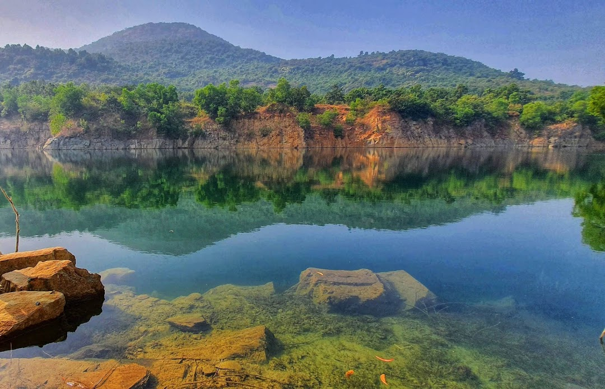

BLUE LAKE MITRAPUR
(balasore,odisha)
BLUE LAKE

BLUE LAKE MITRAPUR-
This is Blue Lake of Odisha. It changes its color due to sun rays. It is bluest in afternoon. It is very deep. It was a stone mine before. It's deepest point is 400 feet in depth. Nearby cities: Coordinates: 21°32'54"N 86°47'19"E
BLUE LAKE
Contact us
Hotels
Food services
Help
map